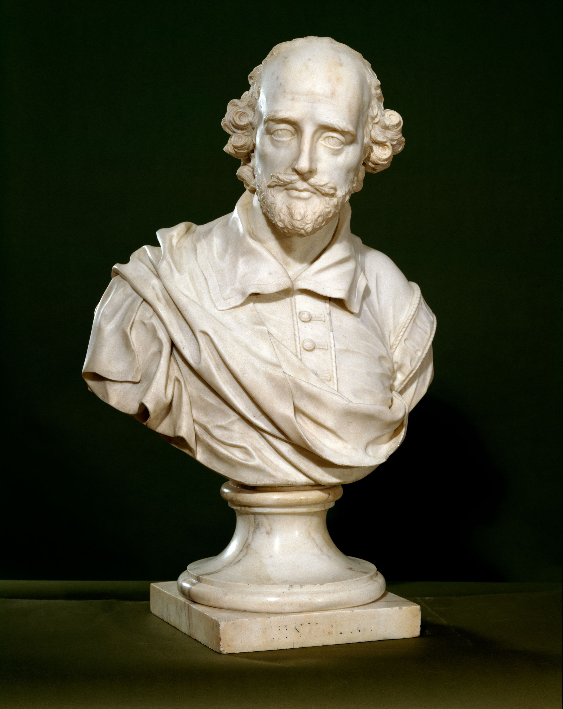
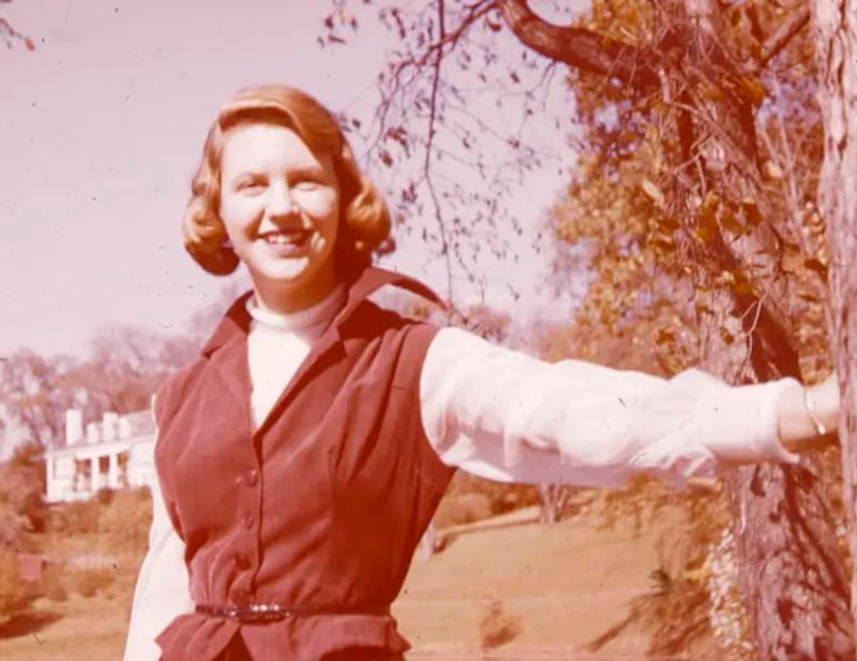
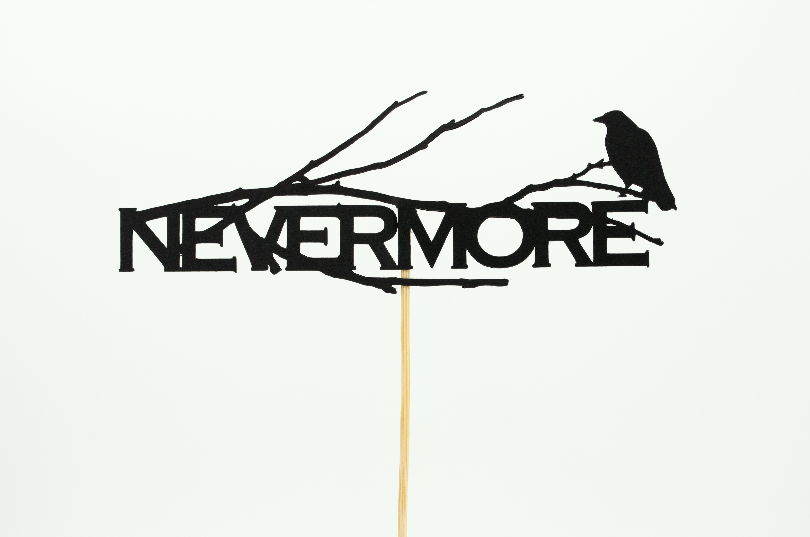
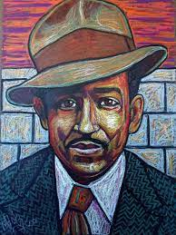

The Greats Include: William Shakespeare, Edgar Allen Poe, Slylvia Plath & Langston Hughs

William Shakespeare was a renowned English poet, playwright and actor who lived in the 16th century. He is widely regarded as one of the greatest writers in history, and his works have been translated into every major language around the world.

Sylvia Plath was an American poet, novelist, and short-story writer who is known for her intense and deeply personal works. Plath's life was marked by both professional success and personal tragedy. Her first collection of poems, "The Colossus," was published in 1960. In 1963, at the age of 30, she died by suicide.

Edgar Allan Poe was an American writer, poet, and literary critic who is best known for his macabre and Gothic stories. In 1833, he won a prize for his short story "MS Found in a Bottle" which helped establish him as a rising literary figure.

Langston Hughes was an iconic American poet and writer who is renowned for his contributions to the Harlem Renaissance. Despite facing discrimination due to his race throughout his life, Hughes continued to write prolifically and became a prominent figure within the literary world.